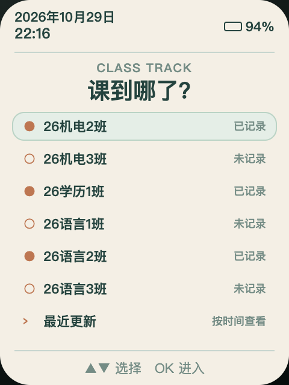
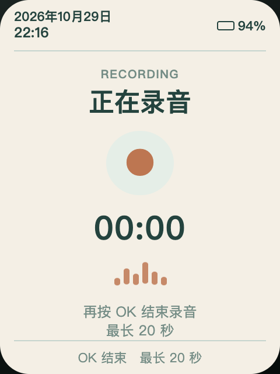
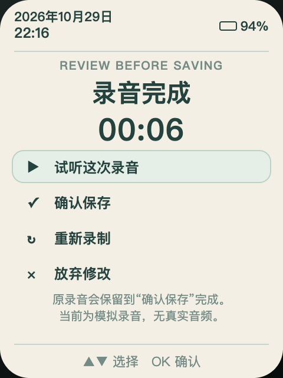
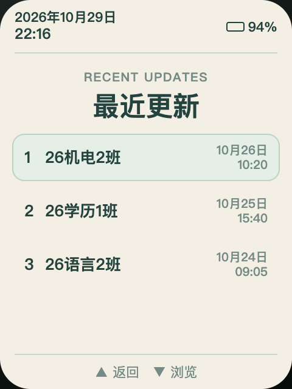

流式 IMA ADPCMStreaming IMA ADPCM
小块编解码，不申请 20 秒 PCM 大缓冲。
Block-by-block encoding without a 20-second PCM buffer.
ClassTrack（课到哪了？）让 FoloToy AI Passport 变成一枚随身的教学进度记录器。选择班级、录一句话、试听后保存——每班只保留最新一条。
ClassTrack turns a FoloToy AI Passport into a pocket teaching-progress recorder. Pick a class, record one short note, review it, and save—one latest recording per class.


一个小但反复出现的教学问题
A small problem that repeats every teaching day
多个班级并行、进度不同，下次上课前才发现自己忘了。ClassTrack 不做复杂系统，只把下课后的那句话留下来。
Classes move at different speeds. ClassTrack avoids another complex system and simply preserves the one sentence you need before the next lesson.
三枚按键，一条路径
Three buttons, one clear path
上、下选择，OK 确认。每一步都在 240×320 屏幕的安全区内完成。
Up and down to select, OK to confirm. Every step fits the 240×320 display safe area.
首页直接看到已记录和未记录状态。
See recorded and unrecorded status directly on the home screen.
按 OK 开始，再按一次结束，页面显示实时计时。
Press OK to start and again to stop, with a live timer on screen.
可试听、确认、重录或放弃；确认前旧录音一直保留。
Play, confirm, re-record, or discard. The old note stays safe until commit.
保存时间戳，并可从“最近更新”按时间查看。
A timestamp is stored and recent updates are sorted by time.
真正的 240×320 尺寸
Designed at the real 240×320 size
七个页面已经通过安全区、中文字形、溢出和元素交叠自动检查。
Seven screens are automatically checked for safe areas, Chinese glyph coverage, overflow, and element overlap.


需要时打开，用完就退出
Open it when needed, quit when done
原生 macOS 前台应用，不安装登录项、不创建后台服务、不联网。关闭最后一个窗口后，进程立即退出。
A foreground-only native macOS app. No login item, no background service, no network. Close the last window and the process exits.
当前构建：Apple Silicon（arm64）。首次打开如被 macOS 拦截，请在 Finder 中按住 Control 点击应用，选择“打开”。
Current build: Apple Silicon (arm64). If macOS blocks the first launch, Control-click the app in Finder and choose Open.
课表就是一张简单表格
The class list is just a small table
CSV 必须使用 UTF-8，表头为 id,name,course，ID 从 0 到 11 且不可重复。
Use UTF-8 CSV with the exact id,name,course header. IDs run from 0 to 11 and must be unique.
id,name,course
0,26机电2班,高职英语
1,26机电3班,高职英语
2,26学历1班,汉语听力
3,26语言1班,汉语听力导入前会检查长度、重复 ID、字符编码和设备字形覆盖。Import validates length, duplicate IDs, UTF-8, and on-device glyph coverage.
为 8 MB Flash 而做的取舍
Deliberate choices for 8 MB of Flash
目标硬件：ESP32-C3、8 MB Flash、无 PSRAM、ST7789P3、ES8311 与三枚 ADC 按键。
Target hardware: ESP32-C3, 8 MB Flash, no PSRAM, ST7789P3, ES8311, and three ADC buttons.
小块编解码，不申请 20 秒 PCM 大缓冲。
Block-by-block encoding without a 20-second PCM buffer.
最终提交标记写入前，新录音不可见。
A new recording stays invisible until its final commit marker.
录音、CSV 与 USB 传输都在使用前校验。
Audio, CSV, and USB payloads are validated before use.
空闲后按顺序停止音频、屏幕与总线，再进入深睡。
Audio, display, and buses stop in order before deep sleep.
公开进展，不把“能编译”写成“已验收”
Public progress, with build and device evidence kept separate
本页面描述的是当前 V1.1 工程状态，不代表已经完成商业产品级认证。
This page describes the current V1.1 engineering state; it is not a claim of commercial product certification.
开源，也开放问题
Open source, including the unfinished edges
ClassTrack 采用 MIT 许可证，底层基于 FoloToy 开源 AI Passport BSP。欢迎查看实现、复现测试、提出 Issue 或改进硬件验收方法。
ClassTrack is MIT-licensed and built on the open FoloToy AI Passport BSP. Read the implementation, reproduce the tests, open an issue, or improve the hardware acceptance process.